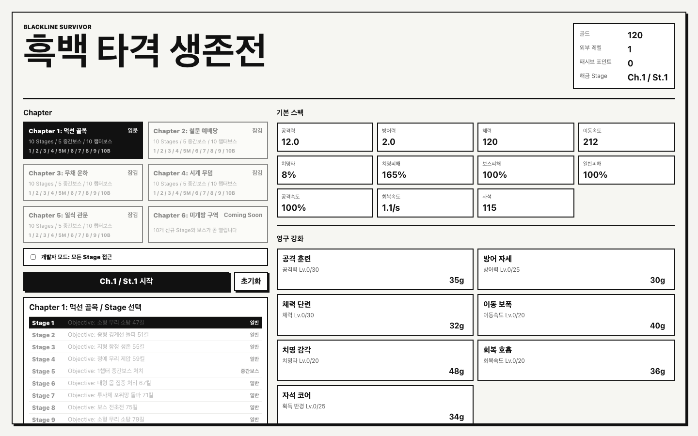
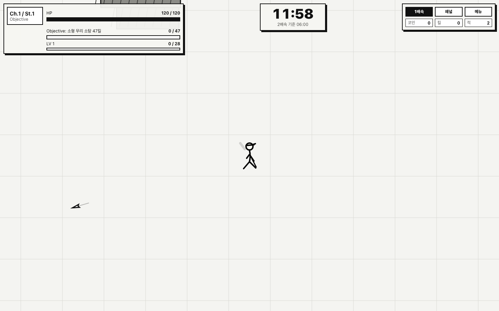

60개 단위, 4개 보안, 17개 엔진 통합 테스트가 통과했습니다. 추출 모듈 기준 line coverage 98.34%, branch 86.13%입니다.
2026.07.14 / ORIGIN-POINT REVIEW
NEXT
NEXT
EVOLUTION.
기존 완료 선언을 전제로 삼지 않고 코드, 테스트, 시각 증거, 밸런스, 배포 경계를 다시 읽었습니다. 흑백 먹선 생존전의 정체성은 유지하되, 다음 고도화는 기능 수보다 제품 신뢰도와 전투 깊이를 먼저 올립니다.
01
원점 판정
현재 구현은 결정론·도메인 불변식·저장 복구 같은 기반이 단단합니다. 반면 실제 플레이 품질과 출시 가능성을 입증하는 증거는 구현 수준을 따라오지 못했습니다.
콘텐츠 정의, 60Hz 시뮬레이션, Canvas 렌더링, 입력, 오디오, React 화면이 App.tsx 4,578줄을 공유합니다.
실제 난이도·브라우저 프레임·스크린샷 회귀·clean-machine 설치·서명/공증은 현재 산출물로 통과를 증명할 수 없습니다.
02
검증된 것과 아닌 것
숫자가 무엇을 증명하는지 범위를 분리했습니다. 통과한 자동화는 유지하되, 대체 지표를 실제 사용자 경험의 증거로 오해하지 않습니다.
npm test 통과. 엔진 기동, 결정성, 저장, 보안 계약 포함.
JS gzip. 100KB 기준에 2.96KB 여유만 남음.
50 Stage × 3 seed, HP 10억. 150건 중 클리어 0건.
보관 스크린샷은 1440×900, 7월 2일 생성본뿐.
해석: 현재 balance batch는 결정성과 개체 상한을 확인하는 smoke test입니다. 현재 soak는 no-op Canvas를 쓰는 Node CPU 측정입니다. 둘 다 난이도나 실제 Electron 렌더 프레임의 합격 증거로 이름을 바꾸거나 범위를 확장해야 합니다.
03
시각 증거 재판독
기존 캡처는 컨셉 방향을 확인하는 참고 자료로는 유효하지만, 최신 UI 변경의 회귀 증거는 아닙니다.


현재
test:visual은 이미지를 캡처할 뿐 golden diff, 겹침 검사, Canvas 비공백 검사, DPR 2, reduced-motion, boss 장면, 접근성 자동 검사를 수행하지 않습니다. 최신 visual artifact도 저장되어 있지 않습니다.
04
추가 개선 발견사항
심각도는 출시 무결성, 회귀 가능성, 사용자 체감 순으로 매겼습니다. P0는 다음 기능 개발 전에 닫아야 합니다.
프로덕션 개발자 모드 노출
일반 메뉴 DOM에 “개발자 모드: 모든 Stage 접근”과 치트 패널 경로가 존재합니다. 진행도·보상 무결성을 우회할 수 있습니다.
빌드 타임 feature flag로 제거하고 production DOM/번들에 치트 문자열과 명령이 없음을 테스트합니다.
밸런스 게이트의 의미 불일치
HP 10억, 20초, 첫 카드 자동 선택 조건에서 클리어 0건입니다. 실제 완주율·TTK·빌드 다양성·경제 곡선을 판정할 수 없습니다.
smoke와 full-run simulation을 분리하고 3개 플레이 성향·다중 seed·전 구간 완료 지표를 도입합니다.
시각 회귀 증거 부재
4 viewport 캡처 스크립트는 비교와 assertion이 없고, 저장된 이미지는 변경 전 1440×900뿐입니다.
golden diff, DPR 1/2, 6개 상태, motion 2종, overlap/console/a11y/Canvas 픽셀 검사를 하나의 gate로 묶습니다.
4,578줄 단일 소유권
테스트가 private engine state를 직접 조작하며 콘텐츠, 시스템, 렌더, UI 변경의 영향 범위가 겹칩니다.
rewrite 없이 content → engine contract → systems → render/input/audio → UI 순으로 추출하고 public test harness를 둡니다.
접근성·입력 완결성
잠금 사유는 title 의존, chapter의 aria-selected 역할 불완전, drawer focus return 부재, pause UI·gamepad·키 재지정이 없습니다.
키보드 roving, focus 복귀, 설명 연결, pause/settings, input intent 계층과 gamepad 프로파일을 구현합니다.
실기 성능 미측정
현재 soak는 GOD/max skill/no-op Canvas 조건의 Node CPU 측정입니다. GPU, compositor, GC hitch, 실제 렌더 명령 비용을 포함하지 않습니다.
Chromium과 packaged Electron에서 15분 trace를 수집하고 per-system·render-layer 진단치를 예산화합니다.
50 Stage의 체감 다양성
스테이지 목표와 맵 구성은 작은 절차 조합에 의존하고, 보스 패턴은 단일 메서드에 집중됩니다. 숫자 대비 authored identity가 약해질 수 있습니다.
챕터별 encounter grammar, Stage landmark, 보스 phase move, 조우 리듬을 데이터화하고 플레이 테스트로 차이를 검증합니다.
출시 하드닝·운영성
체크리스트는 전부 미확인 상태이며 CI, fuse hardening, single-instance, crash/log 정책, artifact provenance가 없습니다.
Node 22 CI와 macOS release job, Electron fuse 검토, checksum/SBOM, clean-machine 증적을 release record로 남깁니다.
05
목표 구조
대규모 rewrite가 아니라 현재 결정론 계약을 보존하는 단계적 추출입니다. 각 단계는 기존 81개 테스트가 통과한 상태에서만 다음 경계를 엽니다.
Chapter, Stage, boss, skill, copy catalog와 schema/invariant.
keyboard, pointer, touch, gamepad를 공통 command로 변환.
world state, fixed clock, systems, event queue, snapshot/replay.
renderer, chapter motif, telegraph, FX budget, diagnostics.
React views, dialogs, HUD, focus, mixer와 lifecycle.
save, Electron boundary, telemetry, CI, packaging evidence.
의존 규칙: Content와 Engine은 DOM/React/Electron을 import하지 않습니다. Render는 snapshot을 읽고 command/event만 발행합니다. 테스트는 private field가 아니라 EngineHarness와 replay fixture를 사용합니다.
06
R0-R5 실행 로드맵
1인 순차 기준 28-42 engineering days입니다. R0-R2가 끝나기 전에는 대규모 콘텐츠 추가를 시작하지 않습니다.
Truth & Integrity
2-3 DAYS- 프로덕션 debug/cheat 완전 제거
- 기존 gate 명칭과 완료 보고 정정
- CI 최소선과 artifact 보존 규칙
Production DOM/번들에 개발자 UI·치트 명령 0건. 기본 CI에서 test/build/diff-check가 필수 통과.
Contract Extraction
5-8 DAYS- typed content catalog와 schema
- Engine API, event, snapshot, harness
- systems/render/input/audio 단계 추출
App.tsx 1,200줄 이하. private state mutation 테스트 0건. 동일 seed replay fingerprint 유지.
Evidence Gates
5-7 DAYS- smoke/full-run 밸런스 분리
- golden visual + a11y gate
- Chromium/Electron performance trace
96개 시각 조합, axe critical/serious 0, 15분 실기 p95/p99·heap gate 통과, full-run 보고서 생성.
Control & Accessibility
5-7 DAYS- pause/settings와 focus lifecycle
- keyboard navigation·설명 연결
- gamepad·touch intent와 remap 기반
키보드-only menu→run→draft→settlement 완주. focus loss 0. gamepad 주요 흐름과 reduced-motion 동적 변경 통과.
Combat Depth & Art
8-12 DAYS- 챕터 encounter grammar·landmark
- 보스 phase 고유 동작과 명확한 telegraph
- HUD 계층·FX·audio mix 정교화
챕터별 판독 테스트, 보스 10종 phase contract, 3개 빌드군 완주 가능, 혼잡 장면 visual/perf gate 동시 통과.
Release Candidate
3-5 DAYS + EXTERNAL- Node 22 clean install/package
- arm64/x64 smoke와 save upgrade
- 서명·공증·staple·checksum·rollback
release checklist 전 항목 증적 첨부 및 2인 승인. Apple 자격증명·네트워크가 필요한 단계는 외부 의존성으로 명시.
07
그래픽·디자인 고도화
흑백 선화는 바꾸지 않습니다. 개선 대상은 장식의 양이 아니라 정보 우선순위, 챕터 기억점, 위험 신호, 타격 리듬입니다.
전장 밀도 곡선
초반 공백에는 저비용 환경선과 landmark를 배치하고, 후반에는 배경 대비를 낮춰 적·탄막 판독성을 보존합니다.
보스 실루엣 언어
크기 확대가 아니라 phase별 외곽선, pose, 패턴 축, 화면 점유 방식으로 10종을 구분합니다.
위험도 3단계
preview, imminent, active를 형태·굵기·리듬으로 구분하고 red는 치명 위험에만 사용합니다.
타격 계층
normal, heavy, critical/kill의 hit-stop, ring, number, sound를 한 계약으로 묶어 과잉 이펙트를 막습니다.
HUD 한 축 정렬
생존, 목표, 성장, 보스 정보를 고정 좌표계에 두고 320px부터 1440px까지 상태 변화로 재배치합니다.
모션·색 독립성
색 없이도 상태를 읽게 하고 reduced-motion/flash 변경은 재시작 없이 즉시 renderer와 CSS에 반영합니다.
08
완료 수용 기준
“구현됨”과 “검증됨”을 분리합니다. 아래 gate가 자동 산출물 또는 release evidence로 남아야 개선 완료로 표기합니다.
| 영역 | 합격 조건 | 산출물 / 명령 |
|---|---|---|
| 코드 경계 | App.tsx 1,200줄 이하, Engine DOM 의존 0, private mutation 테스트 0, core branch coverage 90% 이상. | test:unit / dependency-check |
| 밸런스 | 50 Stage × 3 persona × 10 seed full-run. 일반 TTK, boss TTK, death, clear, build pick, economy p10/p50/p90과 outlier 목록. | balance-full-report.json |
| 시각 | 4 viewport × DPR 2종 × 6 상태 × motion 2종 = 96 기준 이미지. 승인된 mask 외 diff 0.5% 이하. | visual-report.html + PNG diff |
| 접근성 | axe critical/serious 0, keyboard-only 완주, focus 복귀, 잠금 이유 설명, reduced motion 동적 반영. | a11y report + manual checklist |
| 실기 성능 | 15분 Chromium/Electron 실플레이 p95 ≤ 20ms, p99 ≤ 33ms, retained heap +20MiB 이하, 장시간 task 원인 기록. | trace.zip / perf-report.json |
| 번들·기동 | gzip 105KB warning / 120KB hard limit, 직전 release 대비 +10% 차단, packaged cold start 목표 1.5초 이하. | build budget / launch trace |
| 출시 | Node 22 npm ci, arm64/x64 설치, codesign/spctl/stapler 통과, checksum/SBOM, save upgrade·rollback 확인. | release record / checksum manifest |
09
실행 순서와 의사결정
리스크가 낮아지는 순서로 진행합니다. 각 checkpoint에서 데이터가 다음 투자 규모를 결정합니다.
01R0 즉시 착수release integrity
02R1 중간에 harness 고정architecture checkpoint
03R2로 실제 기준선 확보evidence checkpoint
04R3 접근성·입력 완결workflow checkpoint
05R4 콘텐츠 투자량 확정playtest checkpoint
06R5 RC 동결·검증release checkpoint
외부 의존성: 이 작업공간은 Git 저장소로 인식되지 않아 commit 기준선과 clean working tree를 확인할 수 없었습니다. 또한 현재 세션에는 브라우저 자동화 실행 연결이 노출되지 않아 최신 화면 캡처를 생성하지 못했습니다. 두 항목은 R0 착수 시 먼저 복구·확인해야 합니다.